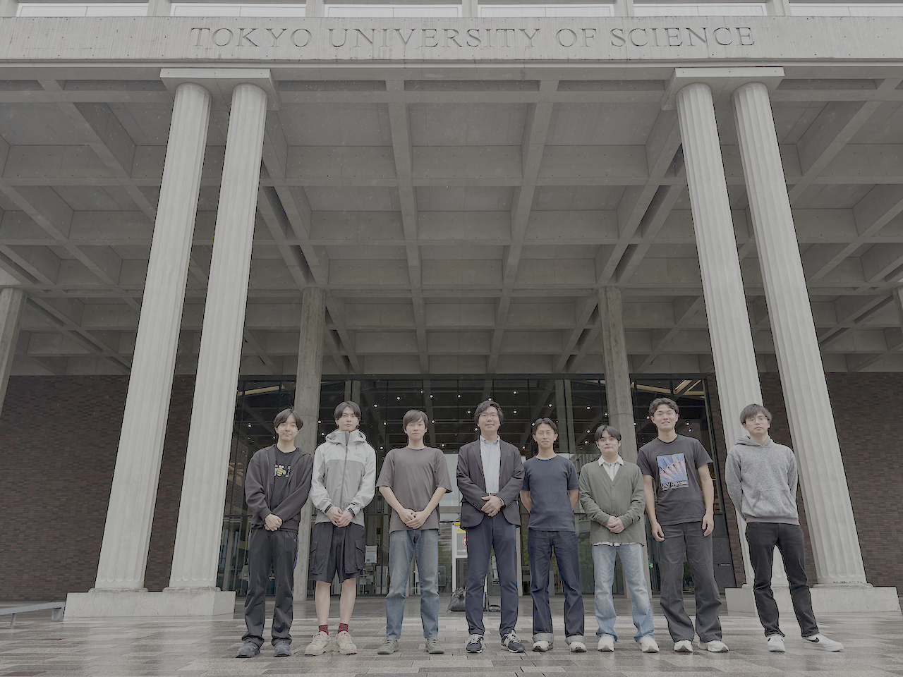

Mochizuki Research Group
計算材料科学に基づく材料開発と機構解明
東京理科大学 望月研究室は、東京理科大学 先進工学部 マテリアル創成工学科に所属し、 経験的なパラメータを一切用いない理論計算（密度汎関数理論に基づく第一原理計算）を行っています。 具体的には、電子状態計算、格子動力学計算、分子動力学計算、対称性解析を基盤として、 コンピューターの中で材料設計・機構解明を行い、次世代を担いうる新物質・新材料の探索に挑戦しています。

News
-
2026/6/8
望月研究室のWEBサイトをオープンしました。
-
2026/6/7
望月講師とともに共同研究を実施している、東京科学大学のJan Hempelmann博士が研究室に訪問してくださいました。固体の化学結合に関する議論を実施しました。
-
2026/5/31
望月講師が、韓国済州島にて開催されたThe 4th Global Conference of Innovation Materials (GCIM2026)におけるThe 1st MRS-K and MRS-J bilateral joint symposiumにて、招待講演を行ってきました。
-
2026/5/15
望月講師とともに共同研究を実施している、東北大学のBae Soungmin助教が研究室に訪問してくださいました。二次元半導体の点欠陥と電子状態に関する研究討論を実施しました。
-
2026/4/1
望月研究室が立ち上がりました。学部4年生6名が研究室に配属されました。